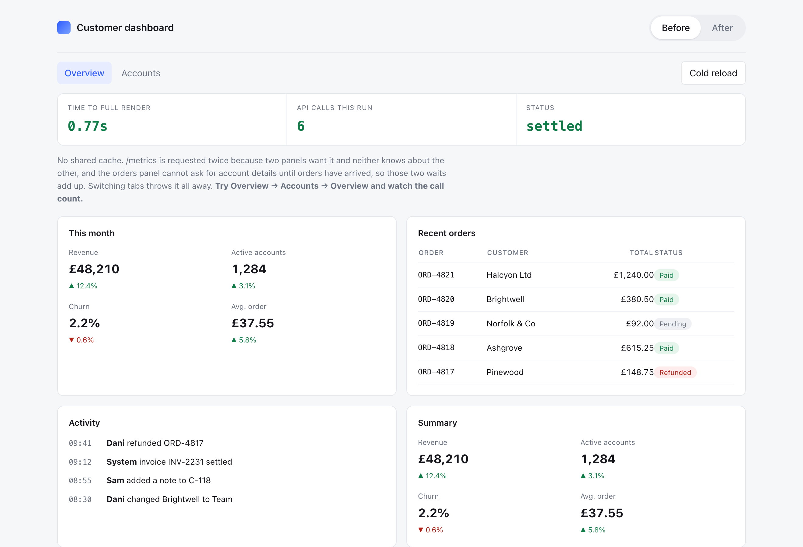
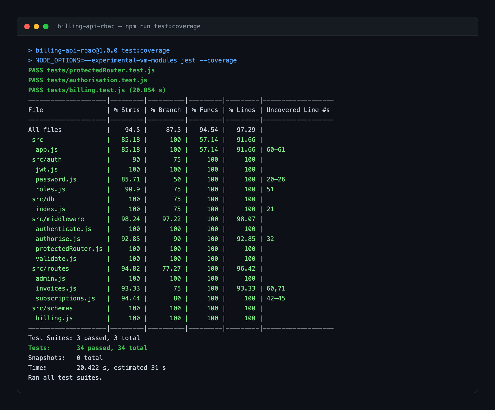
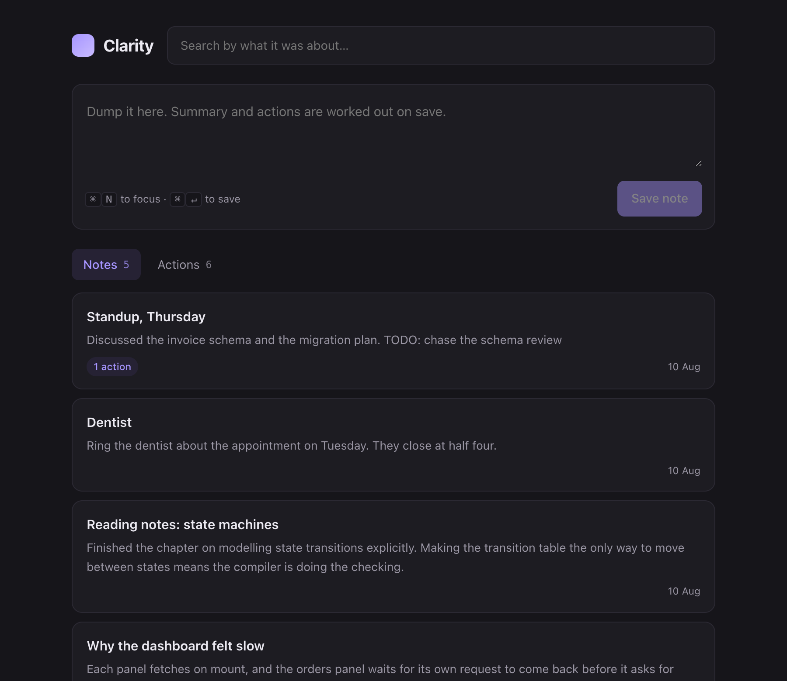
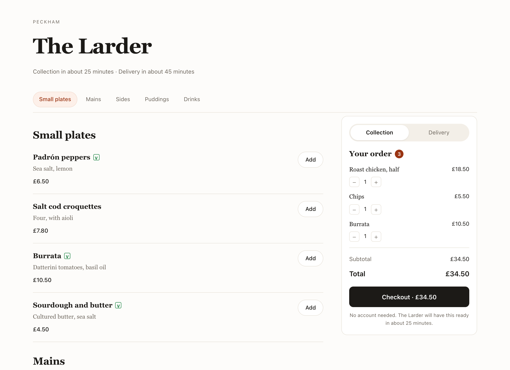
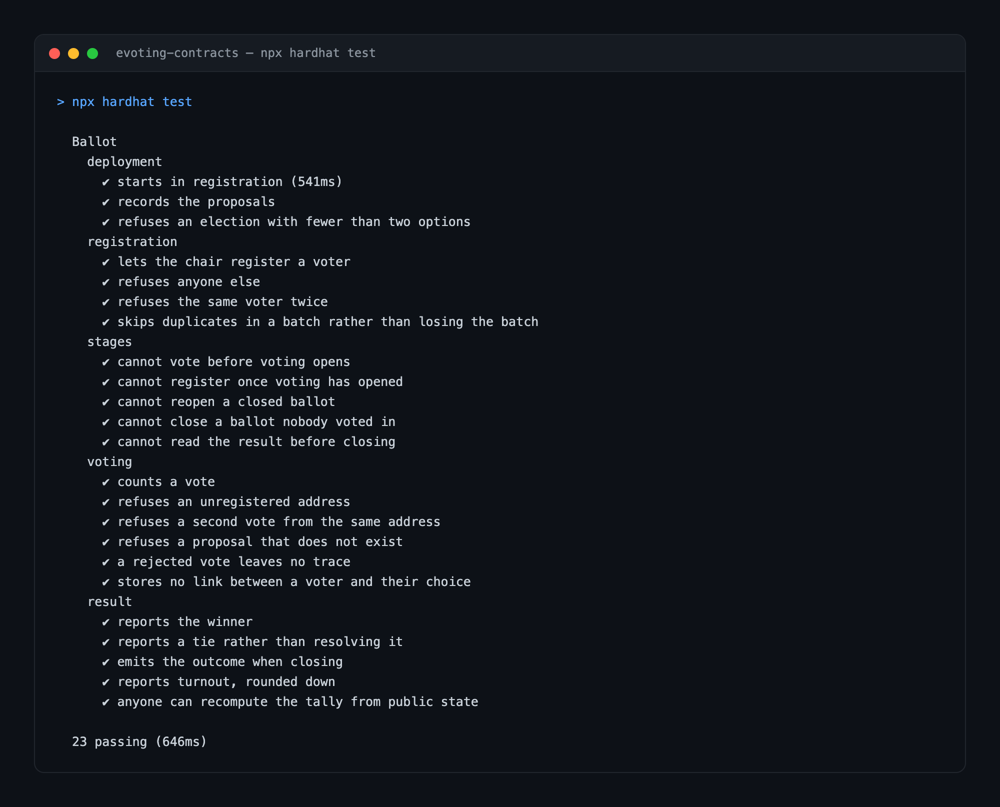

Open to work — London, hybrid or remote
I make slow things fast and fragile things dependable.
Full stack engineer working in TypeScript, React and Node. I've shipped production features to around 30,000 monthly users. Most of my time goes on the parts nobody demos: performance, tests and code the next person has to maintain.

Dashboard load time
3.1s 0.8s
React Query rewrite · ~30k monthly users
Payments test coverage
34% 76%
Two regressions caught pre-release
Weekly reporting task
120 min 10 min
Python automation built on a retail shift
Technologies I work with
- TypeScript
- React
- Next.js
- Node.js
- Express
- PostgreSQL
- Prisma
- Redis
- Python
- Jest
- Vitest
- Playwright
- AWS
- Docker
- GitHub Actions
- Tailwind
Now
What I'm working on this month.
At Alignerr, I spend most of the week evaluating programming tasks used for AI training. Reading other people's code this closely has made me a better reviewer. Outside that, I'm working on Clarity, the note-taking app I originally built for myself.
I'm looking for a junior or mid-level engineering role in London, on a team that reviews code properly and expects me to keep getting better.
Updated August 2026
London, UK
Replying within a day
Selected work
Five things I built, and what actually changed because of them.
Open any project for the detail. The first two are written up in full. Where the original code belongs to an employer or a client, the repo is a rebuild and is marked as one.
Customer dashboard performance rewrite
The first screen 30,000 people saw every month took three seconds to appear, and half of what it showed was already out of date.
3.1s→0.8s median load
Customer dashboard performance rewrite
The first screen 30,000 people saw every month took three seconds to appear, and half of what it showed was already out of date.
3.1s→0.8s median load
- React
- TypeScript
- React Query
- REST

The problem
Every panel fetched its own data on mount, then fetched it again on each tab switch. Nothing was shared and nothing was cached, so people regularly acted on numbers that were minutes old. Support was seeing roughly fifteen tickets a month that traced back to this.
What profiling showed
I measured before changing anything. The network waterfall showed the same three endpoints being hit four times on a cold load, and most of the wait was requests queued behind each other. I mapped which data was genuinely shared between panels and took the migration plan to two senior engineers first.
What I changed
A single shared query layer with keyed caching and background refetching. Cache invalidation is tied to write operations, so the UI updates itself. Spinners became skeleton states matched to the real layout, which stopped the page shifting as data landed. I moved one panel first as a proof, then the rest.
Result
Median load went from 3.1s to 0.8s and the stale-data tickets stopped. Two other screens picked up the same pattern, which I think mattered more than the number did.
Billing API and role-based access control
The highest-risk part of the product was also the least tested. I built the new endpoints, and put a net under the old ones first.
34%→76% test coverage
Billing API and role-based access control
The highest-risk part of the product was also the least tested. I built the new endpoints, and put a net under the old ones first.
34%→76% test coverage
- Node.js
- Express
- PostgreSQL
- JWT
- Jest

The risk
A new admin tier needed billing endpoints that didn't exist yet. The existing payments service sat at 34% coverage, and permission checks were scattered through individual route handlers where they were easy to forget. This was the part of the product where a quiet mistake costs real money.
Tests first
I backfilled tests around the existing payment paths before touching them, so the refactor had something underneath it. The endpoint contract and the schema were agreed in review before I wrote any implementation code.
Permissions
Roles are modelled explicitly, and access control is enforced in middleware, so a new route is protected by default and nobody has to remember. Input is validated at the boundary against the schema, and the database constraints carry what the application layer shouldn't be trusted with.
In production
Coverage went from 34% to 76%, and the new tests caught two regressions before they reached release. The endpoints are still running.
Clarity — note-taking built for ADHD brains
Capture was never the problem. Retrieval was. So I built the app around getting things back out.
Grew out of my final-year project · in daily use
Clarity — note-taking built for ADHD brains
Capture was never the problem. Retrieval was. So I built the app around getting things back out.
Grew out of my final-year project · in daily use
- React
- AWS Lambda
- DynamoDB
- Cognito
- GitHub Actions

I built this for myself. My notes went in fast and never came back out, and most note apps quietly assume you'll return later and organise them. That assumption is where the whole thing failed for me.
So the app is built around retrieval. Summarisation runs on save and lifts actionable tasks into their own list. Semantic search lets you find a note by what it was about, not by what you happened to call it. Anything that didn't serve getting things back out was cut.
It's a React front end on a serverless API: Lambda behind API Gateway, Cognito for auth, DynamoDB for notes, with sync across phone and laptop. It started as my final-year project and it's the note app I use daily. Automated tests and a CI pipeline mean I can still ship to it a year on.
Restaurant ordering flow, rebuilt
The owner thought it was the prices. The funnel said it was the four-step checkout and the forced account.
Baseline→+22% completed orders
Restaurant ordering flow, rebuilt
The owner thought it was the prices. The funnel said it was the four-step checkout and the forced account.
Baseline→+22% completed orders
- Next.js
- Headless CMS
- REST
- Vercel

A local restaurant had a site that took online orders but rarely finished them. People arrived, browsed the menu and left somewhere between the basket and the confirmation. The owner thought it was the prices.
The funnel showed drop-off clustered at two points: the moment the site demanded an account, and a menu that reflowed unusably on phones, which was where most of the traffic came from. That turned the job from a redesign into a removal.
I added guest checkout, collapsed four steps into two, and made the basket survive a page reload. The menu became one scannable list with sticky category navigation on mobile. It runs on Next.js with a headless CMS so the owner can change prices and specials without calling me. Completed online orders rose around 22% over the first two months, and she has been updating her own menu ever since.
Blockchain e-voting system
Electronic voting asks people to trust a database they can't see. The interesting problem is making the count checkable without exposing the voter.
Deployed to Ethereum Sepolia · end-to-end demo
Blockchain e-voting system
Electronic voting asks people to trust a database they can't see. The interesting problem is making the count checkable without exposing the voter.
Deployed to Ethereum Sepolia · end-to-end demo
- Solidity
- Ethereum Sepolia
- Node.js
- Express

The question I wanted to answer: can a count be publicly verifiable while still keeping a vote unlinkable to the person who cast it? A conventional back end asks you to take both on trust.
I wrote the contracts before the interface, because the guarantees had to be settled before any UI decision made sense. Registration, casting and tallying are separate stages with explicit transitions, so an invalid sequence is impossible. The contracts handle one-vote-per-address casting and automatic tallying at close. A Node and Express service sits alongside for anything with no business being on-chain, which keeps gas costs and public data down.
Putting everything on-chain would have been simpler to reason about and far too expensive to run, so drawing that line was the main trade-off. It's deployed to the Ethereum Sepolia testnet with a working end-to-end demo. It taught me more about state machines and the cost of a bad schema under immutable storage than anything else I've built.
How I work
Four habits I've earned the hard way.
-
Measure before you touch it
I don't trust my instinct about what's slow. The dashboard rewrite started with a profiler, and the profiler disagreed with everyone, me included.
-
Make the safe path the default path
Permission checks belong in middleware and constraints belong in the database. If correctness depends on someone remembering, it will eventually be forgotten.
-
Ship the smallest real version
Migrating one panel to prove the pattern works beats proposing a rewrite and spending two weeks defending it in meetings. Working code is a better argument than a document.
-
Write it down for the next person
The onboarding docs I wrote at BlueBow are still used by every new starter. Of everything I did there, that's the one I'm quietly most pleased with.
Path so far
Lagos to New Delhi to London, mostly while working.
Study and work, one timeline.
-
2025 — presentWork
AI / ML Product ContributorAlignerr · Remote
Annotating and evaluating real programming tasks to improve how models write code, across live code environments.
-
Feb — Aug 2025Work
Software Developer InternBlueBow Group · London
Shipped eight-plus user-facing features into a React and TypeScript product serving around 30,000 monthly users, on two-week sprints alongside three senior engineers. Reviewed pull requests weekly and wrote the onboarding docs.
-
2025Study
BSc (Hons) Information Technology — First ClassMiddlesex University · London
Advanced Software Engineering, Full Stack Development, Defensive Security. Final year project: an adaptive cloud-based note-taking system on AWS Lambda, API Gateway, DynamoDB and Cognito.
-
2024 — presentWork
Shift LeadMarks & Spencer · London
Around sixty customer problems a day, alongside full-time study. Built my first genuinely useful thing here: a Python script that took a weekly reporting task from two hours to ten minutes.
-
2023 — 2024Work
Web DeveloperAcumen Digital · Nigeria
Five client websites taken from scoping through to handover on Next.js and a headless CMS. Managed the client relationships and deadlines myself, translating non-technical requests into scoped tickets.
-
2019 — 2021Study
Advanced Diploma in Software Engineering — DistinctionAptech · New Delhi, India
Top 7% of the cohort. Where the fundamentals came from, two countries before this one.
About
The part I like is where an idea turns into something you can click.
I'm a software engineer based in London. I build applications that solve real problems, and I care about what happens to them after launch: whether they hold up, and whether the next person can change them without dread.
Most of my attention goes on performance, tests and keeping code readable. I still get more out of understanding why a system behaves the way it does than out of getting something working by luck.
I work best with other people around. The best solutions I've been part of came out of code review and someone asking a question I'd been avoiding. I'd rather have my approach challenged early than defend it late.
Retail taught me to stay calm when something breaks and everyone is watching, which transfers neatly to production incidents. Outside work I co-ran a coding club teaching JavaScript to secondary school students, and I volunteer with Volunteers on Wheels delivering food and clothing to community hubs.
Contact
Tell me what you're building.
I'm open to junior and mid-level engineering roles in London, hybrid or remote, and to freelance work I can do properly alongside it. Email is the fastest way to reach me and I reply within a day.
pfasae@gmail.comBased in London · References on request